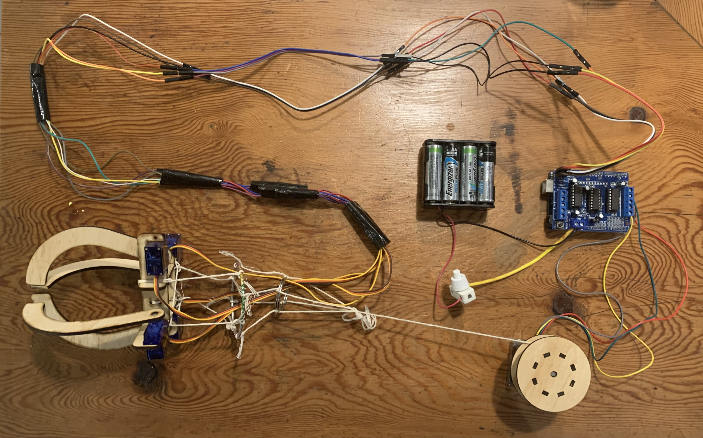

Back in high school we ran many inter-house competitions, one of which was a bake off. In the 2023 bake off my house was aiming to make our stall very interactive. To aid this I built a claw machine, which people could pay to play a game with. The machine would pick up a soft toy, then lift it to a certain randomly generated height before dropping it. If the player cought it they got a cookie. Below is a video of the claw in action.
I made the claw component of this with four servo motors. I considered using one servo (or other kind of motor) to control all four arms but in the end it would have been more complicated and so I had individually controllablearms. The winch used a stepper motor as I wanted the precise control over where the claw was. A DC motor would drift in where the 'bottom' and 'top' are, but a stepper motor does not have this problem
The frame was entirely laser-cut. I was able to fit the parts to the servos and the stepper via a mixture of precise measurements and photo tracing (for the servo heads). This resulted in a functional claw which could be lowered on a string and pick an object up.
